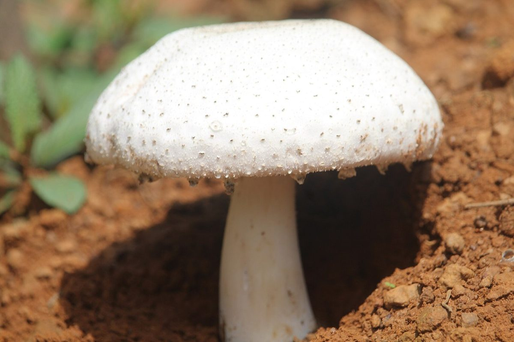
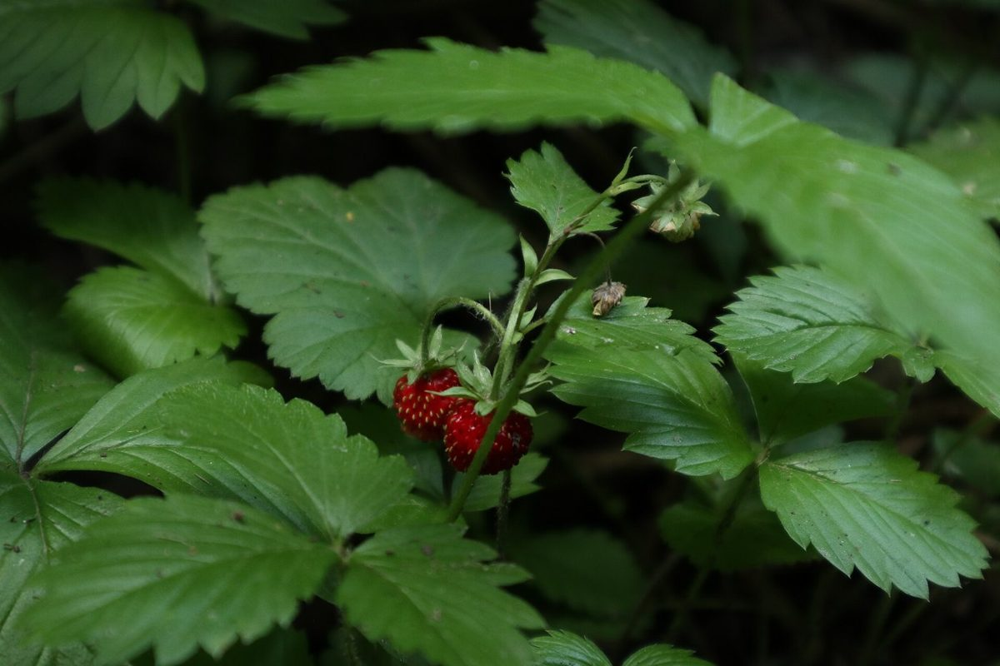
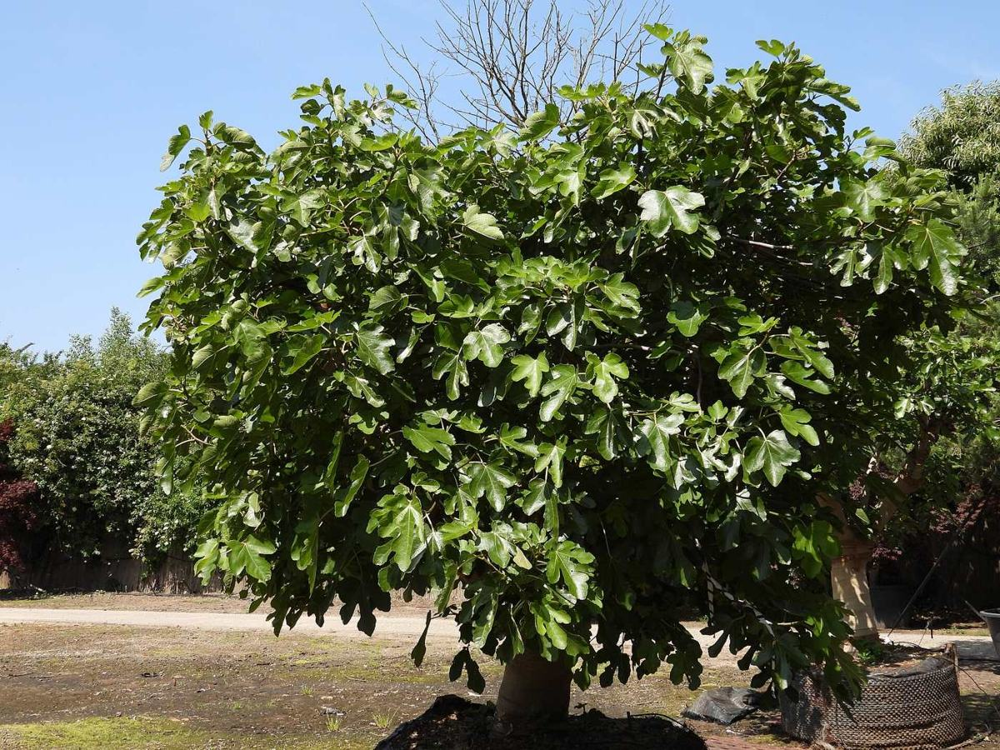
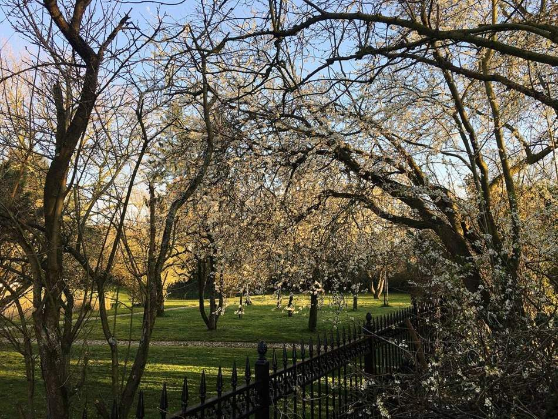
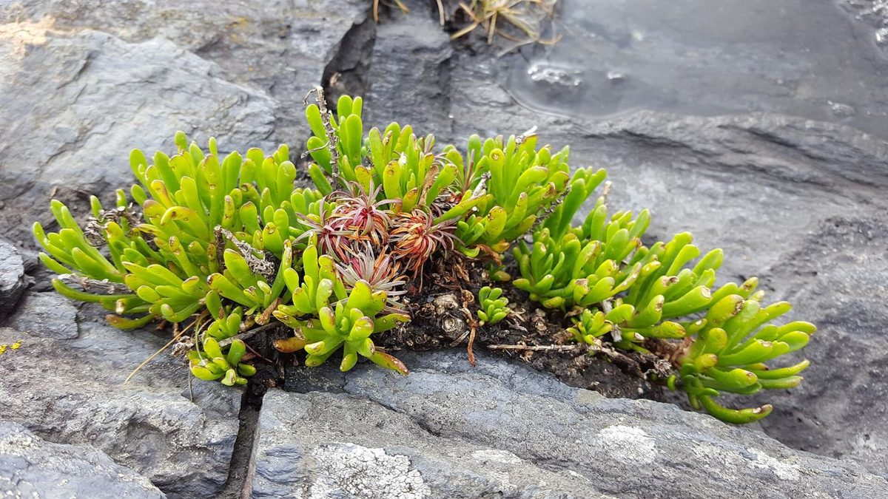

アクセス
場所
| 所在地 | 〒606-8386 京都府京都市左京区新丸太町７５−９ |
|---|---|
| 電話 | 準備中 |
| 営業時間 | 準備中 |
| 定休日 | 準備中 |
| ご予約 | 準備中 |
| 駐車場 | 準備中 |
| SNS | Instagram @shotocafe_kyoty |
地図は所在地の住所をもとに表示しています。
写真(イメージ)
荷掛けフックの先に、五枚





写真はフリー素材のイメージです。お店や周辺の様子を写したものではありません。